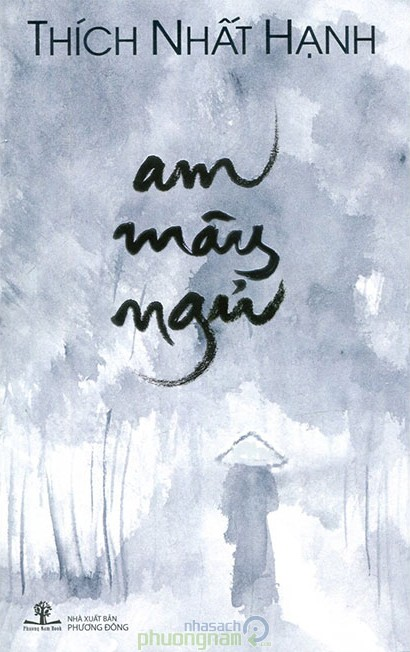

Am Mây Ngủ

LỜI NHÀ XUẤT BẢN
Truyện Am Mây Ngủ tuy nói về công chúa Huyền Trân nhưng ở đây hình ảnh công chúa Huyền Trân không thể tách rời ra khỏi hình ảnh của người tăng sĩ áo vải sống trên am Ngoạ Vân núi Yên Tử. Người ấy là Trúc Lâm đại sĩ, tổ thứ nhất của thiền phái Trúc Lâm.
Trước khi thành Thiền sư, Trúc Lâm đại sĩ đã từng làm vua nước Đại Việt. Đó là vua Trần Nhân Tông, người đã từng đẩy lui cuộc xâm lăng của quân Mông Cổ. Từ ngày xuất gia, Trúc Lâm đã sống đời khổ hạnh, mặc áo vải sô, ngủ am lá, và đi chân đất. Ông đã tu như thế trên mười năm trời, trong khi vẫn không quên tiếp tục xây dựng và bồi đắp nền đạo đức và văn hóa dân tộc. Ông đã du hành sang đất Chiêm để thắt chặt tình hữu nghị Chiêm Việt, mong dựng nên một nền hòa bình lâu dài giữa hai nước. Công chúa Huyền Trân con gái của ông đã tự nguyện làm một trong những viên gạch đầu tiên cho nền móng hòa bình.
Trong Am Mây Ngủ, tác giả đã lấy lòng của một Thiền sư để hiểu lòng một vị Thiền sư. Đó là nét cảm động nhất trong tác phẩm mà Lá Bối trân trọng giới thiệu với các độc giả thân mến hôm nay.
Paris mùa Hè năm Nhâm Tuất.